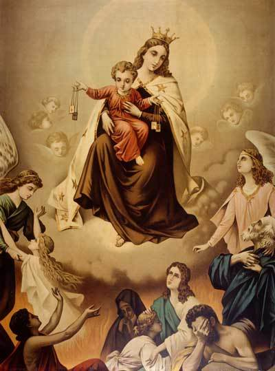

Ordensgemeinschaft
Teresianischer Karmel in Österreich
Wir sind eine Ordensgemeinschaft in der katholischen Kirche, die ihren Anfang im 12. Jahrhundert am Berg Karmel genommen hat. Der Prophet Elija und die Gottesmutter Maria waren Vorbilder in der Nachfolge Christi für die Brüder der seligsten Jungfrau Maria vom Berge Karmel, die zu Beginn des 13. Jahrhunderts vom Patriarchen Albert von Jerusalem ihre Regel bekommen haben. Teresa von Ávila und Johannes vom Kreuz haben unsere Gemeinschaft im 16. Jahrhundert erneuert. Wir sehen es als unseren Auftrag, das kontemplative Leben zu pflegen und den Menschen den Weg der Freundschaft mit Gott zu zeigen. Die Heiligen des Karmel sind uns auch Hilfe und Vorbild: Thérèse von Lisieux, Elisabeth von der Dreifaltigkeit, Edith Stein und viele andere mehr.

Entstehung
Unser Orden geht zurück auf eine Eremitengemeinde auf dem Berg Karmel (Israel) zur Kreuzfahrerzeit. Der Prophet Elija und die Gottesmutter Maria waren ihre geistlichen Führer und Patrone. Mit der Übersiedlung nach Europa (ab 1238) entwickelten sich die "Brüder der Seligen Jungfrau Maria vom Berge Karmel" zu einem Bettelorden. Die ursprünglich rein beschauliche Lebensweise öffnete sich auf Apostolatstätigkeit nach außen. Aus dieser fruchtbringenden Spannung von Kontemplation und Aktion lebt der Orden bis heute. Durch verschiedene Zeitumstände bedingt, erschlaffte die ursprüngliche Lebendigkeit und Strenge im Karmel. Teresa von Avila (1515-1582) gelang es zusammen mit Johannes vom Kreuz (1542-1591) den Orden zu erneuern, d.h. ihn zu seinen Ursprüngen zurückzuführen und ihm eine neue Gestaltung zu geben. Dieser Reformzweig heißt Teresianischer Karmel oder Unbeschuhte Karmeliten. Heute ist der Teresianische Karmel eine weltweite Ordensfamilie in verschiedenen Zweigen (Brüder, Schwestern in der Klausur, Kongregationen von Schwestern und Brüdern, Säkularinstitute, Dritter Orden, Skapulierbruderschaft).
Spiritualität
Unsere Ordensfamilie hat eine besondere Berufung zum Gebet als Teilnahme am Beten Jesu empfangen. Wir feiern täglich gemeinsam Eucharistie und Stundenliturgie, nehmen uns zwei Stunden Zeit zur Meditation, zum innerlichen Beten und versuchen, in den Ereignissen und Beschäftigungen des Alltags in der Gegenwart des Herrn zu bleiben. Ganz gleich, ob einer Priester ist oder nicht, die gemeinsame Berufung zum Leben im Teresianischen Karmel stiftet unsere brüderliche Gemeinschaft, zu der jeder einzelne mit dem beiträgt, was er empfangen hat. Die Kommunität verwirklicht sich im gemeinsamen Beten, Arbeiten, Feiern und im Zusammenleben.
Arbeitsbereiche
Karmeliten stellen in allen Sparten der Seelsorge von Orts- und Weltkirche ihre Dienste zur Verfügung als Pfarrer, Lehrer, Missionare etc. Wir versuchen mit besonderer Sorgfalt unser spezifisches Apostolat einzubringen: Studium und Lehre des geistlichen Lebens, spirituelle Schriften, Exerzitien, Einkehrtage, Seelenführung, Begleitung von Einzelnen und Gruppen, Seelsorge bei den Unbeschuhten Karmelitinnen und beim Dritten Orden, Gebetschulen, Kloster auf Zeit etc. Im Kloster gibt es viele Dienste und Einsätze, wenn das Gemeinschaftsleben und der kirchliche Dienst einer Kommunität gelingen wollen. Kandidaten, die handwerklich mitarbeiten möchten, sind ebenso willkommen wie jene, die einen Dienst in der Seelsorge anstreben. Die verschiedenen Berufungen ergänzen und bereichern einander. In Österreich leben und wirken die Unbeschuhten Karmeliten in Wien, Graz, Linz und Innsbruck.
Ausbildung
In unseren Klöstern Wien und Graz leben die jungen Mitbrüder, die sich dem Orden anschließen möchten und in Ausbildung stehen. In diesen beiden Kommunitäten wird für Burschen und Männer die Möglichkeit zu Kloster auf Zeit angeboten, für jene, die sich für den Ordensberuf interessieren, wie für jene, die im Teresianischen Karmel Vertiefung und Klarheit auf ihrem Weg mit Gott suchen.